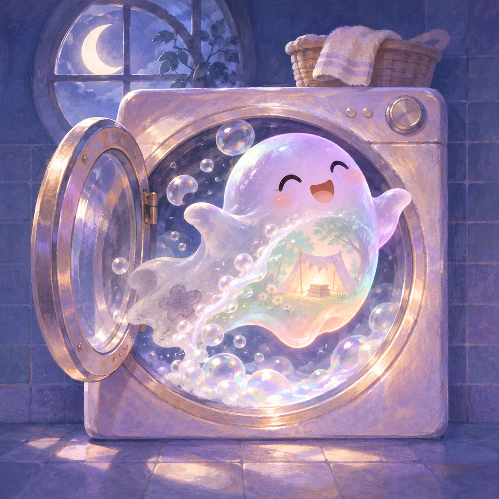

RUB · MATCH · CLEANDRAFT TEST · OPEN LAB
정식 출시작 보기 ↗statflow lab
게임이 되기 전의 즐거움, 앱이 되기 전의 쓸모를 가장 먼저 만나는 공개 실험실입니다.
이곳의 콘텐츠는 개발 중인 프로토타입입니다. 조작과 기능이 예고 없이 바뀔 수 있어요.10 EXPERIMENTS
NEW · PLAYABLE STORIES
이야기를 손끝으로 플레이해요
각기 다른 한 손 조작과 짧은 세션, 직접 합성한 음악·효과음이 들어간 새 게임 실험입니다.
NEW · USEFUL MINI APPS
매일 조금 유용하고 예쁘게
로그인과 서버 전송 없이 내 브라우저 안에서만 작동하는 로컬 퍼스트 도구입니다.
 BREATHE · RESET
BREATHE · RESET SAVE · EAT FIRST
SAVE · EAT FIRSTCHECK IN · REFLECT
ORIGINAL PLAYGROUND
먼저 태어난 네 가지 실험
계속 다듬어지고 있는 초기 플레이 프로토타입입니다.